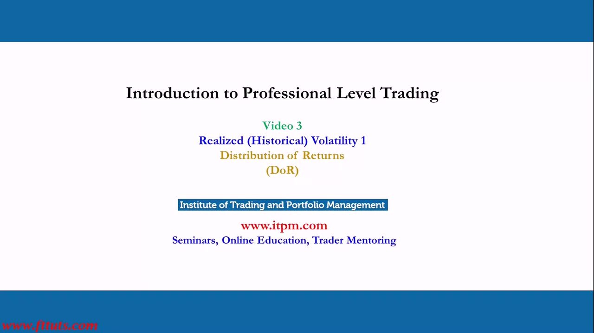
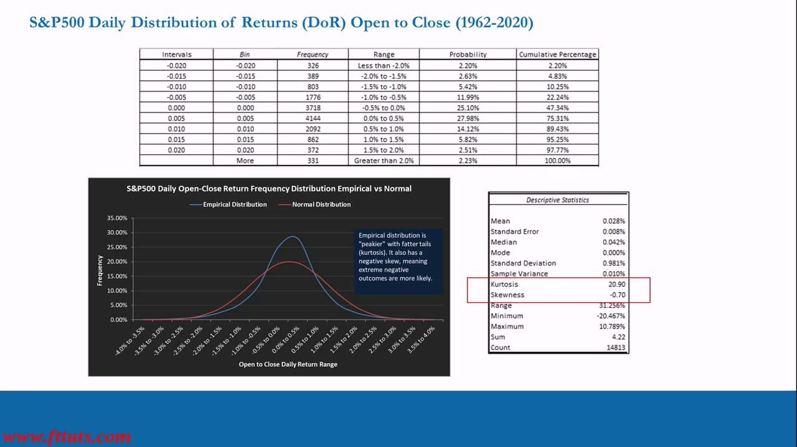
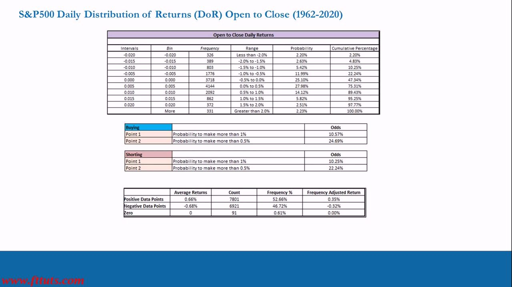
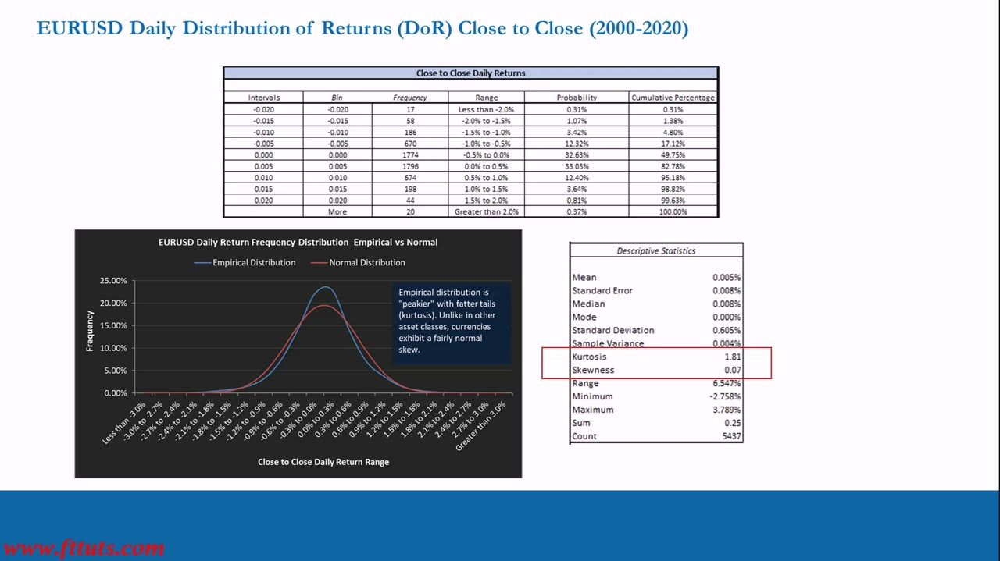
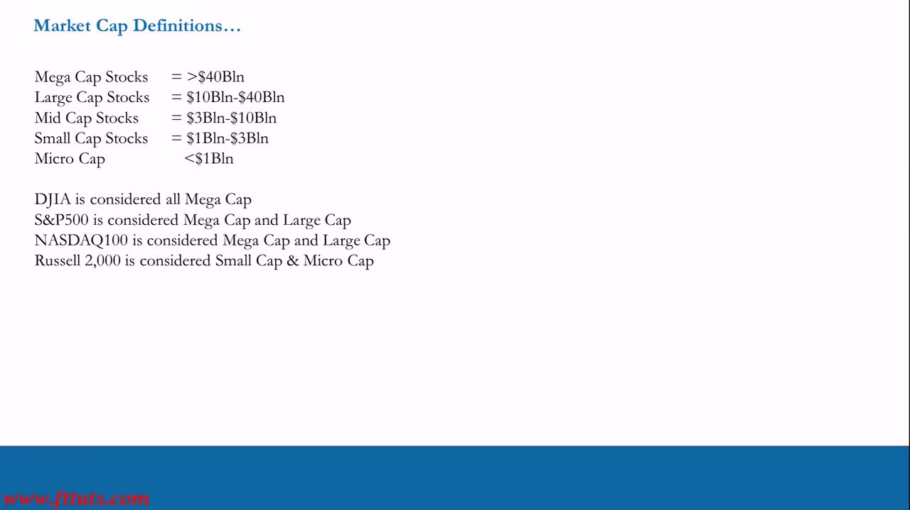
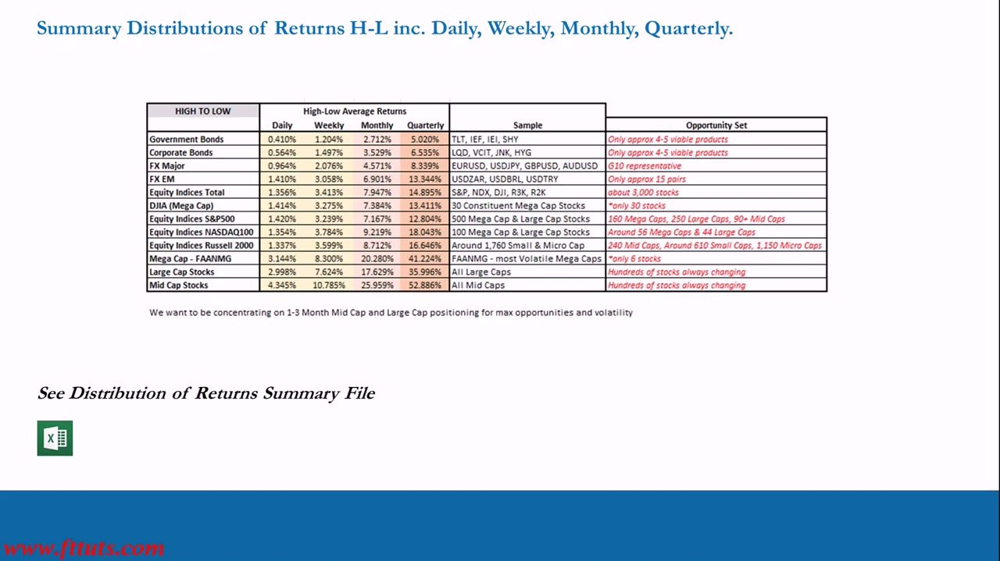
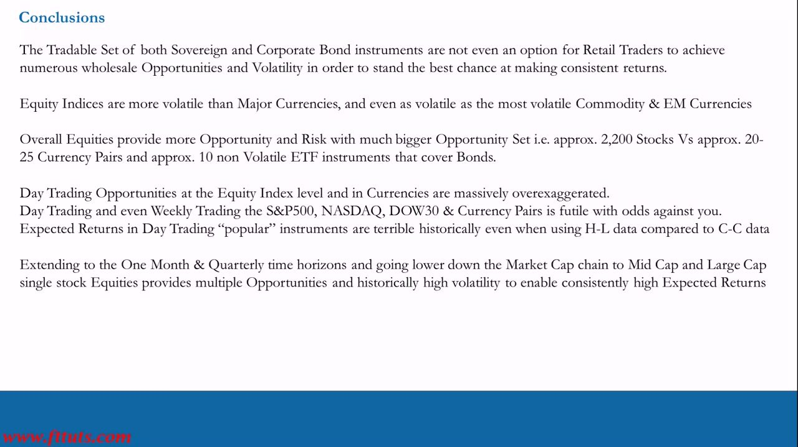
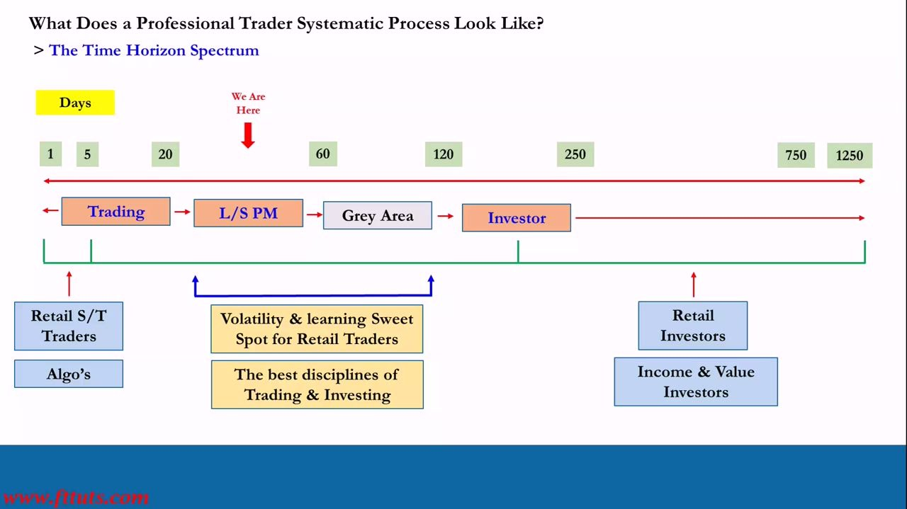
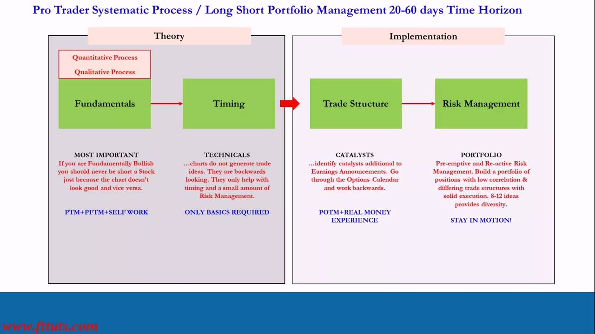

Realized Volatility 1
Measuring an instrument's realized (historical) volatility from its Distribution of Returns — the opportunity AND risk in any asset before you trade it
Realized (historical) volatility is the actual, measured volatility an instrument has shown, quantified by building its Distribution of Returns (DoR); the study proves day trading indices and currencies has ~zero expected value and that real, consistent opportunity lives in 1-3 month Mid/Large-cap single stocks.
The gist
- Realized (historical) volatility is the volatility an instrument has actually exhibited, measured backwards from data by building its Distribution of Returns (DoR); do it on BOTH an Open-to-Close/Close-to-Close AND a High-to-Low basis, and across daily/weekly/monthly/quarterly horizons.
- The DoR buckets historical returns into gates and gives you Frequency, Probability and Cumulative %; the descriptive stats (mean, standard deviation, kurtosis, skewness, min/max, count) are the hard numbers behind 'how volatile is this'.
- S&P500 daily open-to-close (1962-2020, 14,813 days): Standard Deviation 0.981%, Kurtosis 20.90, Skewness -0.70 — 'peakier' than Normal with fatter tails (kurtosis) and a negative skew (worst day -20.467% dwarfs best day +10.789%).
- The odds kill day trading: on the S&P500 the probability of making >1% on the day is only 10.57% buying / 10.25% shorting, and >0.5% is 24.69% / 22.24% — most days sit in the tiny +/-0.5% gates around a ~0 mean, so expected value is roughly zero. Currencies (EURUSD) are even worse: peakier (Kurtosis 1.81), near-symmetric (Skew 0.07), lower odds.
- Volatility rises down the market-cap chain: on High-to-Low daily average returns, Government Bonds ~0.41% < Corporate Bonds ~0.56% < FX Major ~0.96% < Equity Indices ~1.36% < FANMG Mega ~3.14% < Large Cap ~3.00% < Mid Cap ~4.35%; the same ladder holds weekly -> quarterly (Mid Cap quarterly ~52.9%).
- Opportunity needs BOTH volatility AND a large tradable set: bonds (~4-5 products) and FX (~20-25 pairs) are tiny and low-vol; ~2,200 Mid/Large-cap single stocks over a 1-3 month (20-60 day) horizon combine high volatility with a large opportunity set — the professional 'sweet spot'.
What realized (historical) volatility is
- Realized (Historical) Volatility = the actual, measured volatility an instrument has exhibited over its price history — backwards-looking and computed from data.
- You quantify it by studying the instrument's Distribution of Returns (DoR): how big the moves have been and how often.
- The whole point: understand BOTH the opportunity (how much you can realistically make) AND the risk (how much you can lose) in any instrument, over a given time horizon, BEFORE you trade it.
This is a repeatable skill: as long as you can get the price data, you can measure any asset's realized volatility forever. It is the very first input to the trading process — before Fundamentals you must know an instrument's volatility and opportunity set.

The Distribution of Returns (DoR) — S&P500 daily
- Method: sort historical returns into 'gates' (bins e.g. -2.0%, -1.5% ... +2.0%, 'More') and record Frequency, Probability and Cumulative % per gate.
- S&P500 daily Open-to-Close, 1962-2020, Count 14,813: ~47.34% of all days land in the two +/-0.5% gates around the mean; cumulative reaches 89.43% by +1.0% and 97.77% by +2.0%.
- Descriptive Statistics: Mean 0.028%, Median 0.042%, Mode 0.000%, Standard Deviation 0.981%, Sample Variance 0.010%, Kurtosis 20.90, Skewness -0.70, Range 31.256%, Minimum -20.467%, Maximum 10.789%.
- Empirical vs Normal: the real distribution is 'peakier' with fatter tails (kurtosis) AND a negative skew — extreme negative outcomes are more likely.
Standard Deviation is the primary single-number measure of realized volatility read straight off this table (~0.981% daily for the S&P500). The rule of thumb: ~68% of observations fall within +/-1 standard deviation of the mean.

Kurtosis and Skewness — reading tail risk
- Kurtosis measures 'peakiness' and fat tails vs a Normal distribution: positive kurtosis means far more days cluster near a ~zero return AND extreme moves happen more often than a bell curve implies. Kreil: it 'measures or implies the opportunity'.
- S&P500 daily kurtosis 20.90 (very peaky, very fat-tailed); EURUSD daily 1.81 (only slightly peaky — currencies are much closer to Normal). Magnitude is asset-class specific.
- Skewness measures the asymmetry of the tails: negative skew = extreme downside is larger/more likely than upside. S&P500 daily skew -0.70 (worst day -20.467% far bigger than best +10.789%); EURUSD daily skew 0.07 (essentially symmetric).
- Read them together: kurtosis says how fat the tails are, skewness says which tail is fatter. Long-only into a negatively-skewed distribution is dangerous — a single down day can destroy an account, which is why risk management is key.
Markets are generally long-biased, so panic selling produces sharper, larger down-moves than up-moves — the source of equities' negative skew. Standard deviation alone understates real tail risk, so it must be read alongside kurtosis and skewness.
The odds: why day trading has ~zero expected value
- S&P500 daily Buying odds: probability to make more than 1% = 10.57%; more than 0.5% = 24.69%.
- S&P500 daily Shorting odds: probability to make more than 1% = 10.25%; more than 0.5% = 22.24%.
- Summary of the 14,813 days: Positive 52.66% (avg +0.66%, 7,801 days), Negative 46.72% (avg -0.68%, 6,921 days), Zero 0.61% (91 days) — the daily mean return is ~0.
- Most days sit in the tiny +/-0.5% gates, so even picking the right direction captures almost nothing; over many trades the expected outcome converges to zero, and leverage just accelerates the bleed.
You are leveraging a zero expected return. Anyone teaching a day-trading strategy in these instruments either knows this and is irresponsible, or doesn't — either way, avoid them.

Currencies are worse: EURUSD daily
- EURUSD daily Close-to-Close, 2000-2020, Count 5,437: Standard Deviation 0.605%, Kurtosis 1.81, Skewness 0.07, Range 6.547%, Minimum -2.758%, Maximum 3.789%.
- Unlike equities, currencies exhibit a fairly Normal skew (0.07) — near-symmetric — but are still 'peakier' than Normal with fatter tails.
- ~82.78% of days land at or below the +0.5% gate; the odds of a meaningful daily move are even lower than the S&P500.
- The daily 'opportunity' in currencies is even more grossly exaggerated and misunderstood: day trading major currency pairs is even worse than day trading the S&P500.
The result is that the vast majority of retail traders write checks to the market on a daily basis and wonder why they can't make money. THIS IS WHY.

Open-to-Close/Close-to-Close vs High-to-Low
- Open-to-Close (OtC) / Close-to-Close (CtC): the return from the open (or prior close) to the close — a conservative measure of what a directional holder actually realizes. Used for the S&P500 (OtC) and EURUSD (CtC) daily studies.
- High-to-Low (HtL): the full range between the period's high and low — the maximum theoretical move available, larger than OtC/CtC because it assumes perfect timing of both ends.
- Best practice: study every instrument on BOTH bases and across daily/weekly/monthly/quarterly horizons to fully understand its realized volatility.
- Key point: even using the FLATTERING High-to-Low data, expected returns from day trading popular instruments are still terrible — the futility isn't an artifact of the conservative OtC measure.
Market-cap definitions and the instruments assessed
- Market Cap tiers: Mega > $40Bln; Large $10Bln-$40Bln; Mid $3Bln-$10Bln; Small $1Bln-$3Bln; Micro < $1Bln.
- Index composition: DJIA = all Mega Cap; S&P500 = Mega + Large Cap; NASDAQ100 = Mega + Large Cap; Russell 2000 = Small & Micro Cap.
- Instruments studied: Equity Indices (S&P500, NASDAQ100, DJIA30, Russell 3000, Russell 2000, Russell Mid Cap); Currencies (EURUSD, USDJPY, GBPUSD, AUDUSD, USDZAR, USDBRL, USDTRY); Mega-cap FAANMG (FB, AAPL, AMZN, NFLX, MSFT, GOOG); a basket of Large-cap and Mid-cap S&P1500 single stocks.
- Every instrument is run on Open-to-Close AND High-to-Low with a Returns Distribution (i.e. standard deviation).
Volatility — and therefore opportunity — generally increases as you move DOWN the market-cap chain.

The volatility ladder by asset class (High-to-Low)
- High-to-Low average returns rise sharply as you move down the risk chain (Daily / Weekly / Monthly / Quarterly):
- Government Bonds 0.410% / 1.204% / 2.712% / 5.020% (TLT, IEF, IEI, SHY); Corporate Bonds 0.564% / 1.497% / 3.529% / 6.535% (LQD, VCIT, JNK, HYG).
- FX Major 0.964% / 2.076% / 4.571% / 8.339%; FX EM 1.410% / 3.058% / 6.901% / 13.344%; Equity Indices Total 1.356% / 3.413% / 7.947% / 14.895%.
- DJIA 1.414% / 3.275% / 7.384% / 13.411%; S&P500 1.420% / 3.239% / 7.167% / 12.804%; NASDAQ100 1.354% / 3.784% / 9.219% / 18.043%; Russell 2000 1.337% / 3.599% / 8.712% / 16.646%.
- Single stocks are far more volatile: FANMG Mega 3.144% / 8.300% / 20.280% / 41.224%; Large Cap 2.998% / 7.624% / 17.629% / 35.996%; Mid Cap 4.345% / 10.785% / 25.959% / 52.886%.
- Note: 'We want to be concentrating on 1-3 Month Mid Cap and Large Cap positioning for max opportunities and volatility.'
Equity Indices are more volatile than Major Currencies and even as volatile as the most volatile Commodity & EM Currencies. The Close-to-Close standard deviation column tells the same story (e.g. S&P500 daily ~1.035%, quarterly ~6.822%).

The Opportunity Set: volatility AND breadth
- A high-volatility instrument is useless if there are only a handful of them; you need BOTH volatility AND a large enough universe to be consistently in motion.
- Tiny sets (why they fail retail): Government Bonds ~4-5 viable products; Corporate Bonds ~4-5; FX ~15-25 pairs; FANMG is high-vol but only ~6 stocks; an index or a single currency pair is ONE instrument.
- Large sets: Large-cap and Mid-cap single stocks — 'hundreds of stocks always changing' — is exactly where consistent opportunity lives (~2,200 stocks vs ~20-25 currency pairs vs ~10 non-volatile bond ETFs).
- Strategic conclusion: concentrate on ~1-3 month Mid-cap and Large-cap single-stock positioning for maximum opportunities + volatility.
The market dictates where opportunity is; you cannot transpose your own (unrealistic, ultra-short-term) requirements onto asset prices — go to where the volatility and opportunity set actually are.
Conclusions
- The tradable set of Sovereign and Corporate Bonds is not even an option for retail to achieve numerous wholesale opportunities and volatility.
- Equities provide more opportunity and risk with a much bigger opportunity set (~2,200 stocks vs ~20-25 currency pairs and ~10 non-volatile bond ETFs).
- Day-trading opportunities at the Equity Index level and in Currencies are massively over-exaggerated; even Weekly trading the S&P500, NASDAQ, DOW30 and currency pairs is futile with the odds against you.
- Expected returns from day trading 'popular' instruments are terrible historically, even when using the flattering High-to-Low data.
- Extending to the One-Month and Quarterly horizons AND going down the market-cap chain to Mid-cap and Large-cap single stocks provides multiple opportunities and historically high volatility — enabling consistently high expected returns.

Where this sits: the Time Horizon Spectrum
- Time axis (Days): 1, 5, 20, 60, 120, 250, 750, 1250. 'We Are Here' points between 20 and 60 days.
- Process bands (short -> long): Trading -> L/S PM -> Grey Area -> Investor.
- Retail short-term traders and algos sit at the short end (~1-5 days), where retail competes against machines and loses; Retail/Income/Value Investors sit at the long end (~250+ days).
- The ~20-120 day L/S PM / Grey Area band is the 'Volatility & learning Sweet Spot for Retail Traders' — 'the best disciplines of Trading & Investing'.
Lesson 3 supplies the quantitative justification for the 20-60 day (1-3 month) Long/Short sweet spot: the DoR proves the short end has ~zero expected value, while the 1-3 month Mid/Large-cap space unlocks both high volatility and a large opportunity set.

The Pro-Trader Systematic Process (20-60 day L/S PM)
- Two phases with a Quantitative + Qualitative process overlay: Theory (Fundamentals -> Timing) then Implementation (Trade Structure -> Risk Management).
- Fundamentals (MOST IMPORTANT): if you are fundamentally bullish, never short a stock just because the chart looks bad, and vice versa. (PTM + PFTM + self work.)
- Timing (Technicals, only basics required): charts do NOT generate trade ideas — they are backwards-looking and only help with timing and a small amount of risk management.
- Trade Structure (Catalysts): identify catalysts additional to Earnings Announcements; go through the Options Calendar and work backwards. Risk Management (Portfolio): pre-emptive and re-active; build low-correlation positions with differing trade structures — 8-12 ideas provides diversity. 'Stay in Motion!'
Realized volatility / opportunity-set selection is the first input feeding this process: you must know an instrument's volatility before doing any Fundamentals work. Video 4 is a spreadsheet class (with Chris Quill) showing you how to run the Distribution of Returns analysis yourself for any instrument — as long as you can get the data.

Glossary
- Realized (Historical) VolatilityThe actual, measured volatility an instrument has exhibited over its price history; backwards-looking, computed from data — as opposed to forward-looking implied volatility.
- Distribution of Returns (DoR)The core tool for measuring realized volatility: bucket historical period returns into gates and count how often returns fall in each, giving Frequency, Probability and Cumulative % — and therefore the real odds.
- Standard DeviationThe primary single-number measure of realized volatility from the DoR: the typical size of a period's return around the mean (S&P500 daily OtC ~0.981%; EURUSD daily CtC ~0.605%). ~68% of observations fall within +/-1 SD.
- KurtosisHow 'peaky' the distribution is around the mean and how fat its tails are vs Normal. Positive = more count near the mean AND more extreme outcomes (S&P500 daily 20.90; EURUSD 1.81). 'Measures or implies the opportunity.'
- SkewnessThe asymmetry of the tails: negative = extreme downside larger/more likely than upside (S&P500 daily -0.70); ~0 = symmetric (EURUSD 0.07). Says which tail is fatter.
- Open-to-Close (OtC) / Close-to-Close (CtC)Return from the open (or prior close) to the close — a conservative measure of what a directional holder actually realizes.
- High-to-Low (HtL)The full range between a period's high and low — the maximum theoretical move, larger than OtC/CtC because it assumes perfect timing of both ends.
- Opportunity SetThe number of viable, tradable instruments that offer enough volatility to give a consistent stream of trades. You need BOTH volatility AND breadth (~2,200 Mid/Large-cap stocks vs ~4-5 bond ETFs).
- Market Cap TiersMega > $40Bln; Large $10-40Bln; Mid $3-10Bln; Small $1-3Bln; Micro < $1Bln. Volatility generally rises as you move down the chain.